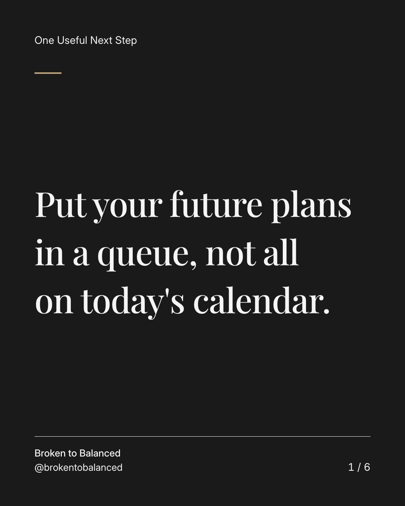
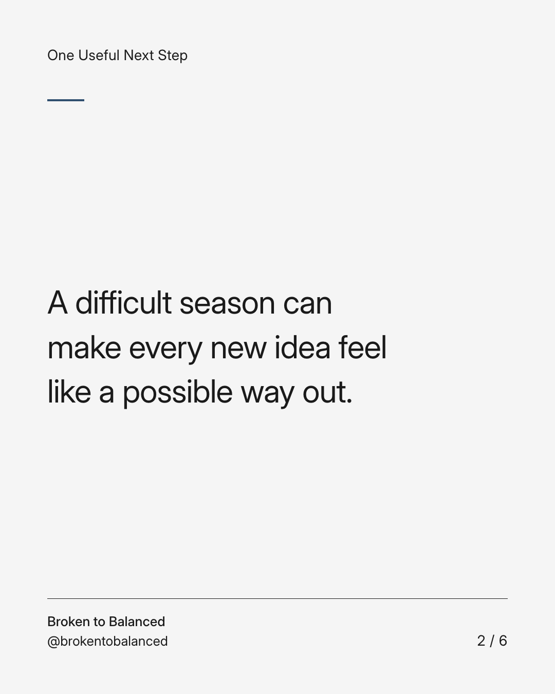
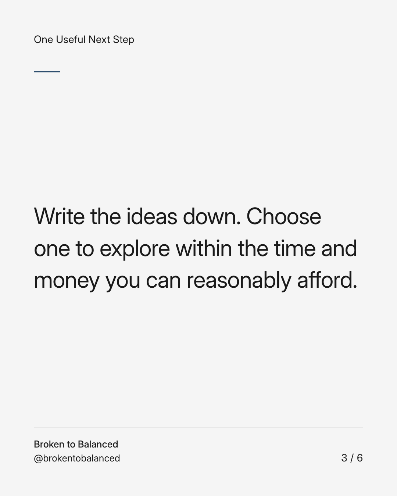
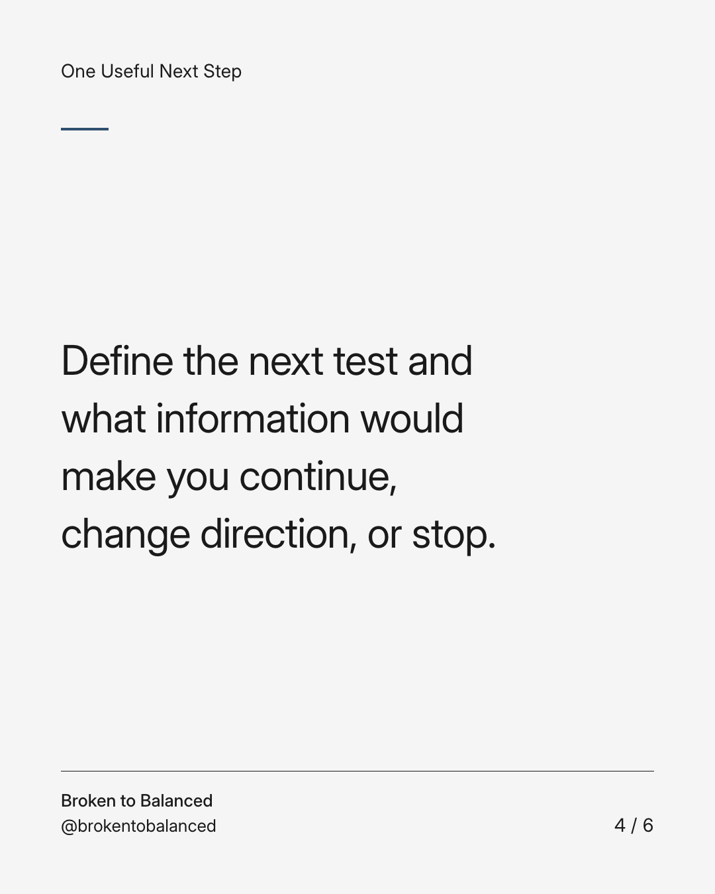
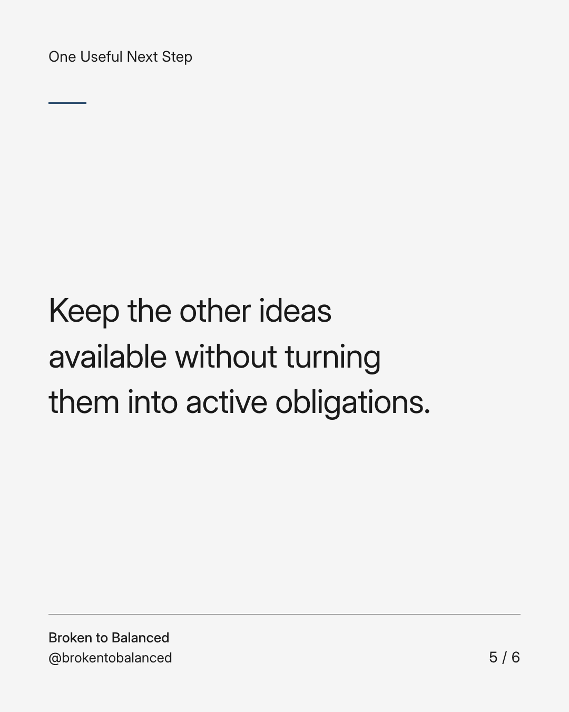
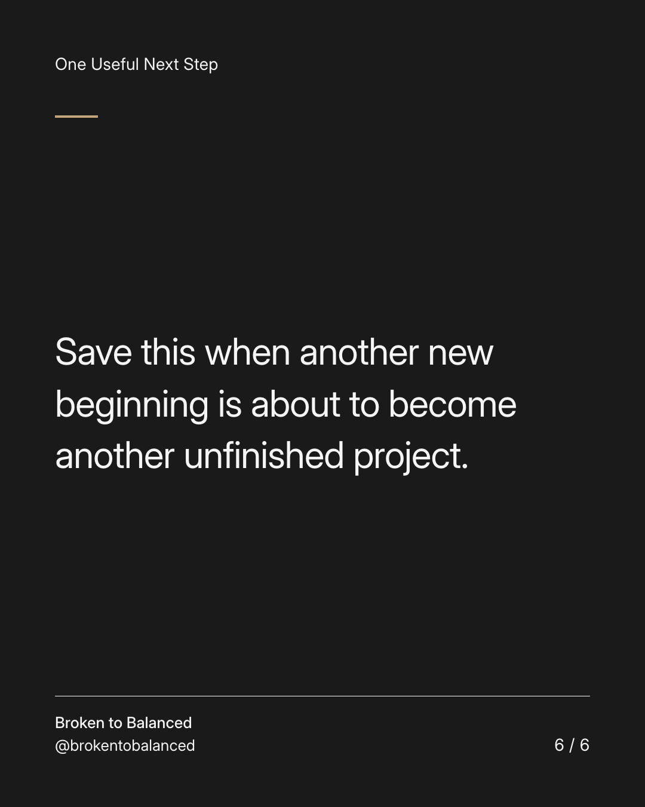

Exact text and accessibility text
Put your future plans in a queue, not all on today's calendar.
Slide 1 of 6. Put your future plans in a queue, not all on today's calendar.


Exact text and accessibility text
A difficult season can make every new idea feel like a possible way out.
Slide 2 of 6. A difficult season can make every new idea feel like a possible way out.


Exact text and accessibility text
Write the ideas down. Choose one to explore within the time and money you can reasonably afford.
Slide 3 of 6. Write the ideas down. Choose one to explore within the time and money you can reasonably afford.


Exact text and accessibility text
Define the next test and what information would make you continue, change direction, or stop.
Slide 4 of 6. Define the next test and what information would make you continue, change direction, or stop.


Exact text and accessibility text
Keep the other ideas available without turning them into active obligations.
Slide 5 of 6. Keep the other ideas available without turning them into active obligations.


Exact text and accessibility text
Save this when another new beginning is about to become another unfinished project.
Slide 6 of 6. Save this when another new beginning is about to become another unfinished project.
Exact caption
Plain-text fallback: select and copy the caption.